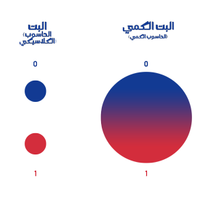

تعريف الكيوبت
الكيوبت هي وحدة المعلومات الأساسية في الحواسيب الكمومية المرادفة للبت المُستخدَم في الحواسيب الكلاسيكية، يمكن للبت الكلاسيكي أن يكون في حالة واحدة فقط من بين حالتين(0،1). في حين تسمح ميكانيكا الكم للكيوبت أن يكون في كلا الحالتين في نفس اللحظة ويطلق على هذه الحالة بالوضع الفائق (superposition). [1]

مقارنة بين البت(bit) و الكيوبت(َQbit)
يتم تمثيل البت \(bit\) عن طريق نبضة كهربائية إما موجبة أو سالبة، أو ويمكن تمثيل الأمر على شكل مفتاح كهربائي إما مفتوح أو مغلق، ويرمز لها بأحد الرقمين: \(0\) أو \(1\). اما في حالة الكيوبت \(Qbit\) فهو عبارة عن قيمة \(Spin\) وهي حالة فيزيائية للاجسام الدون ذرية مثل الالكترون وتكون اما للاعلى \(↑\) او للاسفل \(↓\) او كلاهما معا.
في البت \(bit\) الكلاسيكي البت يمثل احدى احتمالين اما ان يكون صفر او واحد (1،0). أما الكيوبت \(Qbit\) فمن الممكن فيمثل صفر او واحد او صفر و واحد او حالة مركبة بينهما (بين ال 0 وال 1) ويطلق على الاحتمال الاخير الوضع الفائق \((superposition)\) .
و اذا ضاعفت العدد في البت \(bit\) العادي فأنك ستحصل على 4 احتمالات
\((0,0)\) \((0,1)\) \((1,0)\) \((1,1)\)
اما في الكيوبت \(Qbit\) فيمكن ان تكون في جميع الحالات في نفس الوقت
\((<00| ,<01| ,<10| ,<11|)\)
بشرط ان تكون جميعها في حالة تشابك(Entanglement) وفي حالة وضع فائق (Superposition)
\(|ψ> = α|00> + β|01> + γ|10> + δ|11>\)
الوضع الفائق:ψ
ه probability amplitude (P.A): α , β , γ , δ :وهو رقم مركب يستخدم لوصف سلوك نظام في ميكانيكا الكم.
ويمكن حساب احتمال وجود النظام الكمي في احدى الحالات عن طريق مربع P.A لتلك الحالة بحيث يكون مجموع جميع الإحتمالت يساوي 1
\(|α|^2 + |β|^2 + |γ|^2 + |δ|^2 =1\)
ملحق:
ساي:ψ
< | : ترميز bra-ket ، أو ترميز Dirac
الفا:α
بيتا:β
جاما:γ
ديلتا:δ